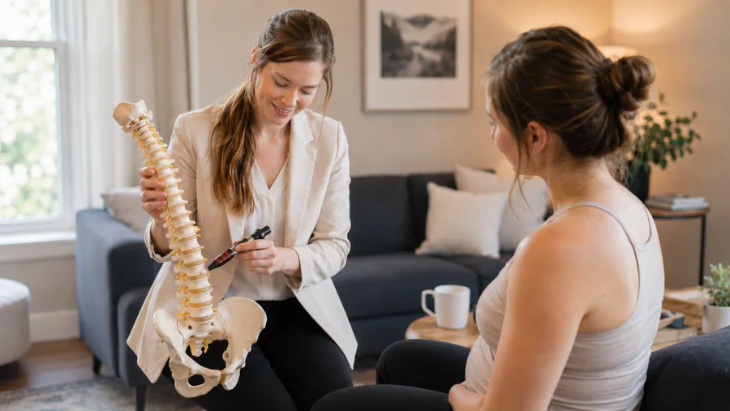

Living with neck, back or joint pain or stiffness? Dr. Sylvia Frierson, DC evaluates and cares for the neck, back, shoulders, elbows, wrists, hips, knees, ankles and feet, right in your home or workplace across Greenville, Spartanburg, Gaffney and nearby Upstate towns.
Dr. Sylvia is a Sherman College–trained chiropractor focused on upper cervical care, licensed in South Carolina and North Carolina. She has advanced training in Orthospinology and the Activator Method.
5-star reviews on Google Not ready to book? Start with a free 10-minute call
Meet your chiropractor
Dr. Sylvia Frierson, DC
Hear from Dr. Sylvia in 50 seconds: who she is, how a house call works, and what makes her gentle approach different.
Book a visitWhat an evaluation includes
Your first visit starts with a conversation about your health history, what you have noticed, and your goals. Dr. Sylvia then does a hands-on evaluation and explains what she finds in plain language before anything else happens.
If chiropractic care looks like a good fit, she will talk you through what care could look like. If something needs a different kind of provider, she will tell you that too.

Gentle, instrument-based care
Care uses precise instruments, with no twisting, popping or cracking. That makes it a comfortable option for people who have never seen a chiropractor or who did not enjoy traditional adjusting. Learn more about gentle care with no cracking.
When to get other help first
Pain after a serious fall or accident, numbness or weakness that is getting worse, loss of bladder or bowel control, fever with a stiff neck, or chest pain needs emergency care right away. Call 911 or go to the nearest emergency room.
Where Dr. Sylvia visits
Care comes to you across the Upstate. Find your town:
Gaffney, SCSpartanburg, SCGreenville, SCGreer, SCSimpsonville, SCMauldin, SCTaylors, SCBoiling Springs, SC
Learn more on the blog
Article
Desk Work and Your Neck
A quick setup check and simple movement breaks for long desk days.
Read moreArticle
Sleep, Posture, and Your Neck
Simple pillow and position habits for better rest.
Read moreArticle
Is Your Headache Coming From Your Neck?
How the top of your neck and your head are wired together, in plain language.
Read moreMore ways Dr. Sylvia can help
Care
Upper cervical care at home
Precise care for the top of the neck, where the skull meets the spine.
Read moreCare
Expecting moms, new moms and kids
Gentle care that adapts as bodies change, for the whole family.
Read moreCare
Visits at your workplace
A private room and five minutes of setup is all it takes.
Read moreCare
Gentle care, no twisting or popping
Precise instruments instead of cracking. You simply rest on the table.
Read moreCommon questions
Yes. Dr. Sylvia evaluates and cares for neck, back and joint pain or stiffness at your home or workplace.
Yes. Evaluations can include the shoulders, elbows, wrists, hips, knees, ankles and feet.
Dr. Sylvia will tell you after the evaluation and point you toward the right kind of provider.
No one can promise how any one person will respond to care. If you are curious whether upper cervical chiropractic is a fit for you, the best next step is a conversation. Text 803-429-1231, book a free 10-minute call, or book a visit below.
Next Expecting moms, new moms and kids Read